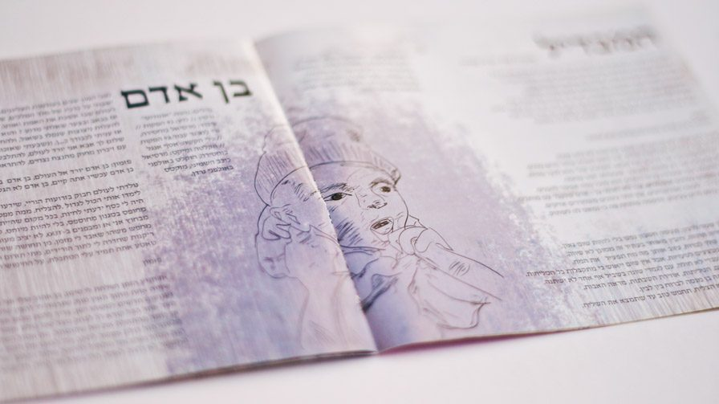
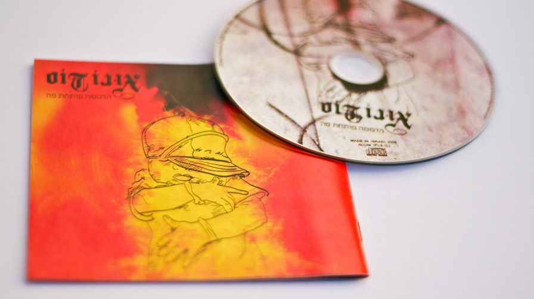
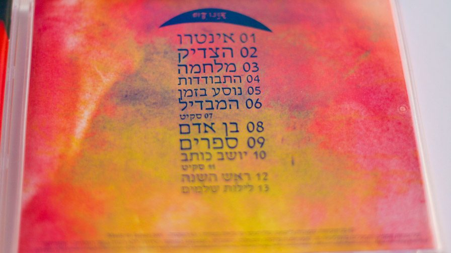
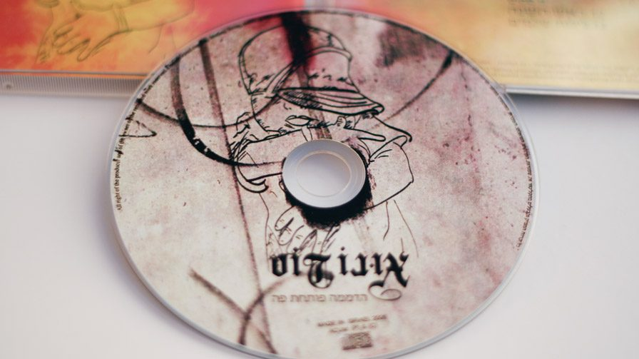
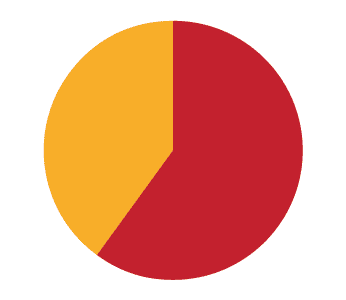

Uno Dos is the first "Nahman Meoman" religious rapper in Israel.
Background - Inside the Jewish religion we have many streams that "fight" each other for government funding and public recognition. The "Nahmanin" believes in Rabi Nahman of Braslav from Oman in Ukraine. In order to spread Tora knowledge the "Nahmanim" travel in big vans throughout the city. Once in a while they stop in a central place and start dancing and playing loud "Nahman" music. The music the "Nahmans" play is happy music, usually Torah sentences set to stolen pop hits.
In the "Nahmans" community, Uno Dos is known for being a father to 9 children from Beit Shemesh, and it was quite a surprise for people to see him as a rapper. Uno Dos' entire project is a volunteer project; everyone that took part in that project worked without pay, except gratitude. All of its donations go to impoverished religious people.
Cover – "Breaking the Silence" is Uno Dos' debut album, and I felt that a connection is laid there between his new-born son (the 9th) and the album. When his wife got pregnant, it was him discovering Hip-Hop and being away from the house for a long time, treating donations and his music as a child of sorts. Moreover, Uno Dos has not always been a "Nahman". He renounced religion, so he had a lot of pent-up aggression that was released through music.
In the booklet, I used family photos to make each song his child. We sat together and matched each child to a song, and sometimes an event that was fateful and important. Logo – the Uno Dos logo went though many stages, and finally we decided that it should have more of a Hip-Hop influence than a religious one. In the end, it came out somewhat gothic, resembling Oman script. In the booklet, I tried to experiment with giving biblical letters gothic attributes as the religious Spanish Jews did years ago.
Project finished on May, 2010

No Videos